Welcome to BeePost, a cutting-edge social media marketing and automation tool designed to simplify and amplify your online presence. With BeePost, managing multiple social media platforms becomes effortless, empowering businesses, influencers, and marketers to achieve their goals with efficiency and precision.
BeePost integrates seamlessly with popular social media platforms like Facebook, Instagram, LinkedIn, and Twitter, providing a centralized hub for content management. Whether you want to create posts, schedule them for optimal engagement, or generate compelling articles using advanced AI, BeePost has got you covered. Our intuitive interface and powerful features ensure that you spend less time on logistics and more time focusing on your strategy.
For administrators, BeePost offers an excellent opportunity to monetize the platform through a flexible subscription model. Create custom subscription plans tailored to various user needs, enabling scalable revenue generation while providing exceptional value to your customers.
BeePost isn’t just a tool—it’s your partner in navigating the dynamic landscape of social media marketing. Whether you’re a seasoned marketer or just starting, BeePost equips you with everything you need to succeed in the digital age.
Setting up the BeePost application is a straightforward process.
Overview & Requirements
Overview
Just follow these steps to get your application up and running in no time:
Download the Script: Begin by downloading the script from Codecanyon. You'll receive a zip file containing all the necessary files.
Unzip the File: After downloading, unzip the zip file to access the installation files.
Locate Installation Zip: Within the unzipped files, you'll find the installation zip file. Locate this file, as it contains the necessary setup files and instructions.
Installation Steps: Follow the instructions provided in the installation zip file to complete the setup. This typically involves configuring your server or localhost environment and specifying certain settings.
Completion: Once you've followed the installation steps, your BeePost application will be ready to use. You can then proceed to configure and customize it according to your needs.
Requirements
Before you begin the installation process, ensure that your server or localhost environment meets the following requirements:
PHP >= 8.*: BeePost requires PHP version 8 or higher to function correctly.
GD PHP Extension: Make sure that the GD PHP extension is enabled on your server. It's essential for image processing tasks.
Ctype PHP Extension: The Ctype PHP extension should be enabled to handle character type checking.
BCMath PHP Extension: BCMath is necessary for arbitrary-precision mathematics, which may be used in various calculations within the application.
Fileinfo PHP Extension: Ensure that the Fileinfo PHP extension is enabled to handle file-related information.
Mbstring PHP Extension: Mbstring is important for multibyte character encoding support, which may be needed for internationalization features.
JSON PHP Extension: BeePost relies on JSON for data interchange, so the JSON PHP extension must be enabled.
Tokenizer PHP Extension: The Tokenizer PHP extension is used for parsing code, which is essential for certain functionalities.
OpenSSL PHP Extension: OpenSSL is necessary for secure connections and cryptographic operations.
PDO PHP Extension: Make sure that the PDO PHP extension is enabled, as it is used for database access.
XML PHP Extension: The XML PHP extension is required for handling XML data and may be used in certain parts of the application.
Config on Localhost/XAMPP/WAMP/LAMP/Laragon
You can easily install BeePost on your local development environment using popular tools like XAMPP, WAMP, LAMP, or Laragon. Follow these steps to set up the software locally:
Database Setup
Start XAMPP: Open the XAMPP Control Panel. You can do this by searching for "XAMPP Control Panel" and running it as an administrator.
Start Apache and MySQL: In the XAMPP Control Panel, click the "Start" button next to "Apache" and "MySQL." This will start the Apache web server and MySQL database server.
Access phpMyAdmin: Open your web browser and type the following URL into the address bar: http://localhost/phpmyadmin/
Login to phpMyAdmin: You will be taken to the phpMyAdmin login page. Log in with the default credentials:
Username: root
Password: (Leave this field empty)
Note: If you've set a password for MySQL during XAMPP installation or later, use that password instead of leaving it empty.
Create a New Database:
On the phpMyAdmin dashboard, click on the "Databases" tab located at the top.
In the "Create database" section, enter a name for your new database in the "Database name" field.
Choose the appropriate collation (usually, you can leave it as the default).
Click the "Create" button.
Confirmation: You will receive a confirmation message indicating that the database has been created successfully.
[N:B]- Please note the Database Username, Database Name, Database Host, and Database Password for a later part of this installation process.
File Setup for Your Application
After downloading the application zip file from Codecanyon, follow these steps to set up your files in the right location:
Download and Unzip: Start by downloading the application zip file from your source (e.g., Codecanyon). Once downloaded, unzip the main application package to access its contents.
Locate Installer Zip: Within the unzipped folder, look for the installer zip file. This zip file typically contains all the necessary files for installing and setting up your application.
Extract to Project Directory: Unzip the installer zip file into your project directory or the root directory of your web server. This step ensures that your application files are correctly placed and organized for installation.
Visual Guide: Installation Steps with Screenshots:
You can easily install BeePost on your cPanel or any Hosting web panel. Follow these steps to set up the software locally:
Access cPanel: Log in to your cPanel hosting account. You can typically access cPanel by navigating to your hosting provider's website and logging in with your credentials.
Database Setup
Database Wizard: Return to cPanel's main dashboard and find the "MySQL Database Wizard" or "MySQL Databases" option. Create a new database for BeePost and take note of the database name, username, and password you set during this process.
[N:B]- Please note the Database Username, Database Name, Database Host, and Database Password for a later part of this installation process.
File Setup for Your Application
File Manager: Once inside cPanel, look for the "File Manager" icon or option. Click on it to access your website's files.
Upload Files: Navigate to the public_html directory or if you create sub-directory for ("BeePost") and click on it. Then, use the "Upload" option to upload the BeePost application zip file from your computer into this directory. Once the upload is complete, select the zip file and choose "Extract" to unzip its contents.
Visual Guide: Installation Steps with Screenshots:
After successfully configuring your server, whether it's a local environment or cPanel hosting, you are now ready to proceed with the application installation. Simply follow the instructions provided below to seamlessly set up the application on your system:
Step-1 Access Installer: Access the installation script through your web browser (e.g., http://localhost/BeePost or https://yourdomainname.com) and follow the on-screen instructions to complete the setup.
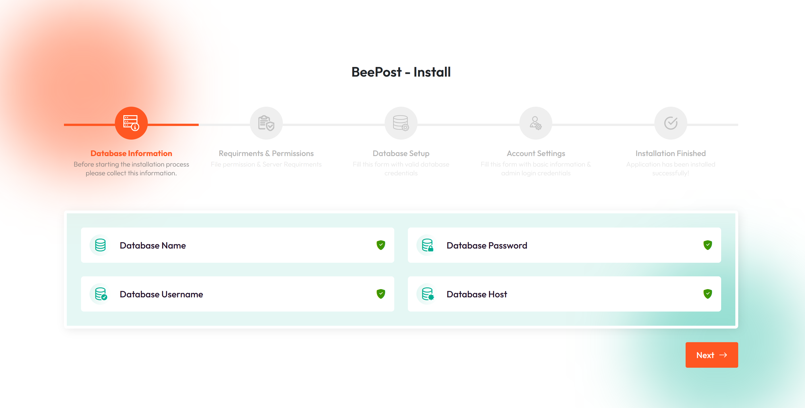
Step-2 Permissions & Requirements: Permissions are assigned to ensure that the Requirements application can execute operations smoothly within your system's setup directory.
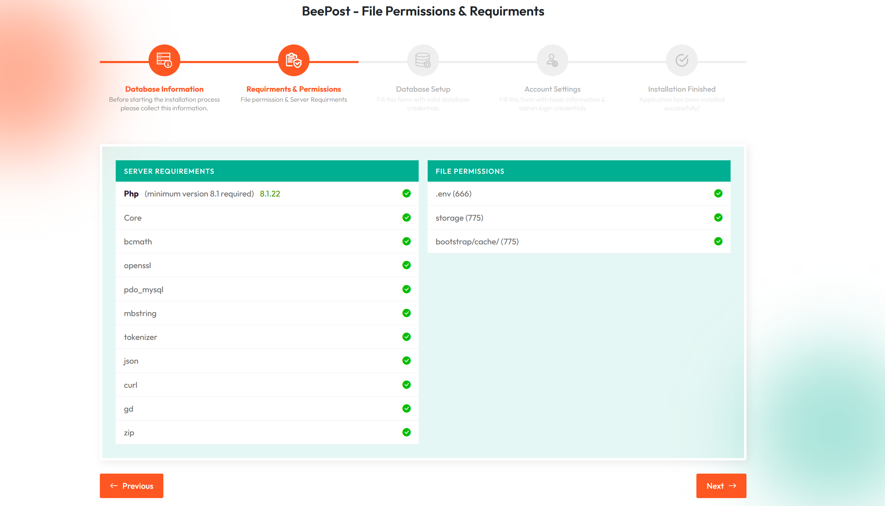
Step-3 Database Setup: Please ensure that you enter the correct database name, database user, and password that you previously created.
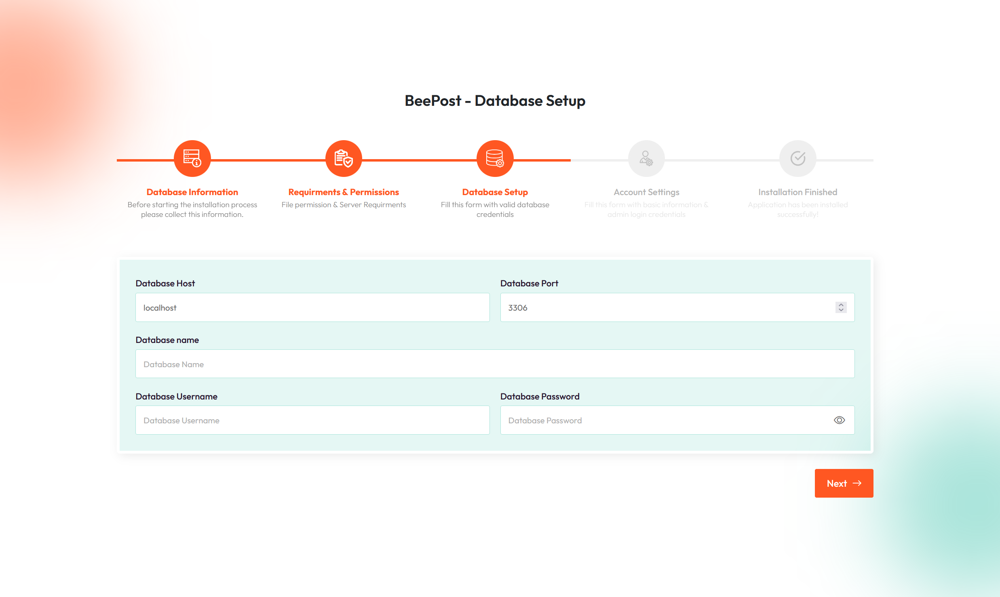
Step-4 Account Setup: During this step, you'll establish your admin access credentials, including the username needed for logging into the admin panel upon successful installation. Afterward, click the button to initiate the database import as part of the installation process.
[Note: The Force Import button is intended for forcefully importing the database into an existing non-empty database. Please exercise caution, as this action may overwrite or delete your existing data.
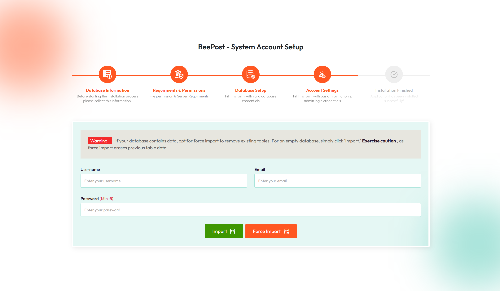
Step-5 Installation Completed Successfully: Congratulations! The installation has been successfully completed. You can now access your admin panel for this application. For further configuration of the application's internal settings, please refer to the additional instructions provided in this documentation.
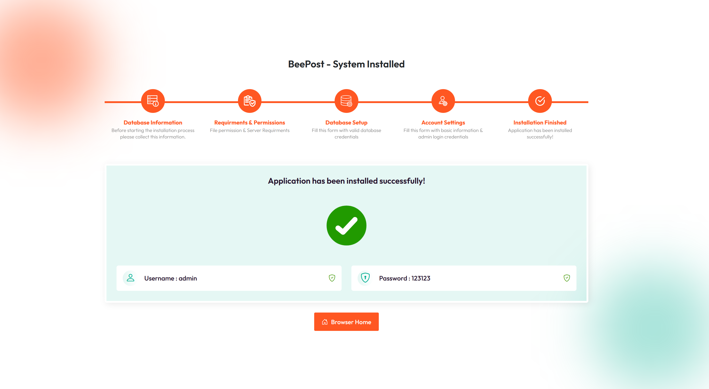
Video Guide for Installation
Watch this step-by-step video guide to quickly and effortlessly install the application on your system. Whether you're using a local environment or cPanel hosting, this video will help you through the entire process.
Windows Installation
MAC OS Installation
Admin Panel Overview
Admin Panel Overview
The BeePost Admin Panel is designed to provide comprehensive control and insights for administrators. Key features include:
Dashboard: Displays an overview of subscription packages, categories, AI templates, and subscription income.
Access Control: Manage user roles and permissions efficiently.
Subscription Services: Create and manage subscription plans for monetization.
Social Media Management: Oversee connected platforms, accounts, and scheduled posts.
User Statistics & Support: Monitor user activity, manage accounts, and handle support tickets effectively.
AI Content Management: Access and manage AI templates and generated content.
Frontend Configuration: Customize sections, blogs, and other content for the user-facing interface.
This intuitive and feature-rich admin panel ensures smooth operation and management of the BeePost platform.
Frontend Section Management
The Frontend Section Management in the BeePost Admin Panel allows administrators to configure and customize various sections of the frontend site. This feature provides flexibility to manage and display content effectively to the end-users. Below is an explanation of key functionalities:
Key Functionalities
Navigate to Frontend Sections:
Click on Sections in the sidebar menu under Frontend Configuration.
Select the desired section (e.g., About Us, FAQ Section, Team Section, etc.) to manage its content.
Manage Section Content:
Title: Set the main title for the section.
Sub Title: Add a subtitle to provide additional context for the section.
Description: Write a brief description about the section to engage users effectively.
Click Update to save changes.
Add New Section Items:
Click the + Add New button to add a new item to the section.
Fill out the fields, such as:
Icon: Choose an icon that visually represents the item.
Title: Add a title for the item.
Description: Provide a short description for the item.
Status: Toggle the status to activate or deactivate the item.
Click Save to add the item to the section.
Editing and Deleting Section Items:
Click the Edit Icon (pencil icon) to modify an existing item.
Make the necessary updates and click Save to apply changes.
Click the Delete Icon (trash icon) to remove an item permanently from the section.
Common Sections and Their Purpose
About Us: Share your organization's values and mission with users.
FAQ Section: Provide answers to common user queries to enhance user experience.
Team Section: Showcase the team members to build credibility and trust.
Feature Section: Highlight the key features and benefits of your platform.
By effectively managing these sections, administrators can ensure the frontend site is visually appealing, informative, and engaging for users.
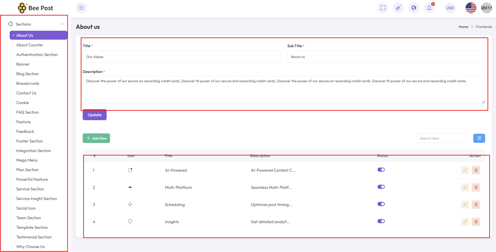
Setup & Configuration
System Configuration Overview
The System Configuration section in the BeePost Admin Panel provides tools to customize and optimize the platform's functionality. Key options include:
KYC Configuration: Manage Know Your Customer (KYC) processes for secure user verification.
This section enables administrators to tailor the platform to meet business needs and ensure seamless operations.
App Settings Overview
The App Settings section in the BeePost Admin Panel allows administrators to configure fundamental and advanced settings for the platform. Key features include:
Basic Settings: Set site name, user site name, contact details, time zone, date format, and country information.
SEO Settings: Manage SEO-related configurations to optimize visibility and search engine rankings.
Logging: Enable and monitor system logging for better diagnostics and tracking.
Rate Limiting: Configure rate limits to manage API requests and enhance platform security.
Theme Settings: Customize the appearance and theme of the platform.
Storage Settings: Manage file storage preferences and configurations.
Recaptcha Settings: Enable CAPTCHA for enhanced security against bots and spam.
Social Login Settings: Configure login options for users using social platforms.
Login Settings: Manage login-related parameters to enhance user access and security.
Logo Settings: Upload and manage platform logos for branding.
Ticket Settings: Configure support ticket settings to enhance user support operations.
This section ensures administrators can tailor the BeePost platform to align with their operational requirements and branding goals.
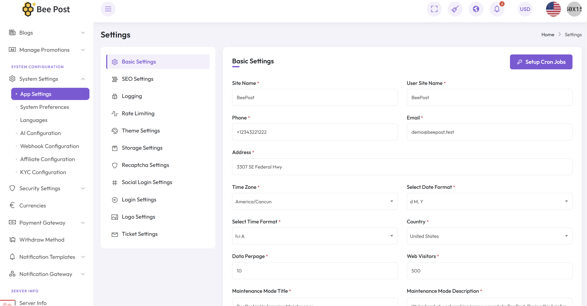
AI Configuration Overview
The AI Configuration section in the BeePost Admin Panel provides tools to manage AI-related settings and optimize AI-powered features. Key areas include:
Basic Configuration:
Open AI Model: Select the AI model to be used, such as ChatGPT-4.
Default Tone: Configure the default tone for AI-generated responses (e.g., professional, casual).
Default Creativity Level: Set the creativity level for AI outputs (e.g., low, medium, high).
Default Max Result Length: Specify the maximum length of AI-generated outputs.
Bad Words Filter: Define restricted words to ensure content appropriateness.
Open AI Secret Key: Securely manage and input the API key for AI integration.
This section allows administrators to fine-tune AI features to meet platform requirements while ensuring proper control over content and performance.
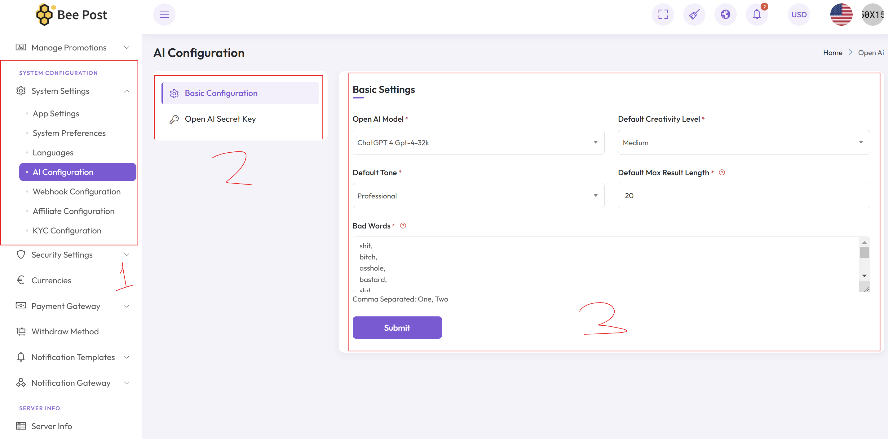
Notification Gateway Configuration
The Notification Gateway section in the BeePost Admin Panel allows administrators to configure Mail and SMS gateways for automated notifications. Follow these steps to set up and manage notification gateways:
Mail Gateway Setup
Navigate to the Mail Gateway:
Go to System Configuration from the sidebar menu.
Click on Notification Gateway, then select Mail Gateway.
Edit Mail Gateway:
Click on the Edit icon (pencil icon) next to the desired mail gateway (e.g., SMTP, PHPMailer, SendGrid).
Fill in Necessary Fields:
Provide the required details such as host, port, username, password, and encryption method based on the mail service provider.
Save Changes:
After entering all details, click Save to apply the configuration.
Custom Notification Templates
Create Templates:
Go to Notification Templates under the Notification Gateway menu.
Select Add New Template or edit an existing one.
Customize the template content and variables according to the notification requirements.
Save the template for future use.
SMS Gateway Setup
Navigate to the SMS Gateway:
Go to System Configuration from the sidebar menu.
Click on Notification Gateway, then select SMS Gateway.
Edit SMS Gateway:
Click on the Edit icon next to the desired SMS gateway provider.
Fill in Necessary Fields:
Provide details such as API key, sender ID, and any additional parameters required by the SMS service provider.
Save Changes:
Click Save to apply the SMS gateway configuration.
By following these steps, administrators can configure both Mail and SMS gateways for seamless notification delivery and customize templates for various notification scenarios.
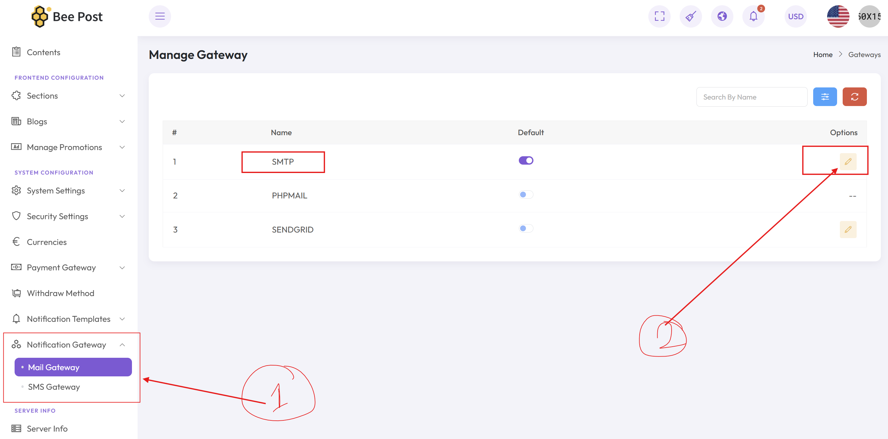
Language Management
The Language Management section in the BeePost Admin Panel allows administrators to add, update, and manage the languages available on the platform. Follow these steps for effective management:
Adding a New Language
Navigate to the Languages Section:
Click on System Configuration in the sidebar menu.
Select Languages from the dropdown menu.
Add a New Language:
Click the + Add New button at the top of the page.
Fill in the required fields, such as Language Name and Code.
Click Save to add the new language to the platform.
Managing Existing Languages
Change Language Status:
Toggle the Status button next to a language to activate or deactivate it.
Set a Default Language:
Click the Star Icon next to a language to make it the platform's default language.
Translate Language Content:
Click the Translate Icon to open the translation editor for the selected language.
Update the translations as needed and save changes.
Delete a Language:
Click the Delete Icon to remove a language from the platform.
Confirm the action when prompted to permanently delete the language.
The Language Management section ensures that the platform can support multiple languages for a global audience, with options to customize translations and set default language preferences.
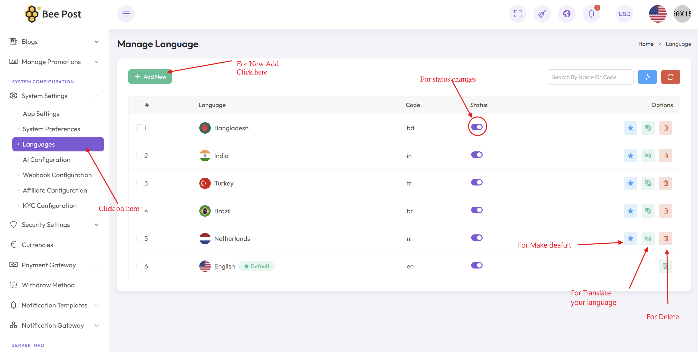
Social Account/Platform Management
The Platform Management section in the BeePost Admin Panel allows administrators to integrate and manage social media platforms. Follow these steps to set up and manage platforms effectively:
Adding Accounts to a Platform
Navigate to the Platforms Section:
Click on Social Media in the sidebar menu.
Select Platforms from the dropdown menu.
Add an Account:
Find the platform you want to add an account to (e.g., Facebook, Instagram, Twitter).
Click the + Add Account button under the Options column.
Provide the required credentials or connect the account as prompted.
Configuring a Platform with API Keys
Locate the Platform:
In the platform list, find the platform you want to configure (e.g., Twitter, LinkedIn).
Configure API Key:
Click the Configure Icon (gear icon) under the Options column.
Input the necessary API keys or credentials required by the platform.
Save the configuration to integrate the platform successfully.
Editing an Account
Edit Existing Account:
Click the Edit Icon (pencil icon) next to the desired platform.
Update the account details or settings as required.
Save the changes to apply the updates.
This section enables seamless integration and management of social media platforms to ensure efficient posting and account control for all supported platforms.
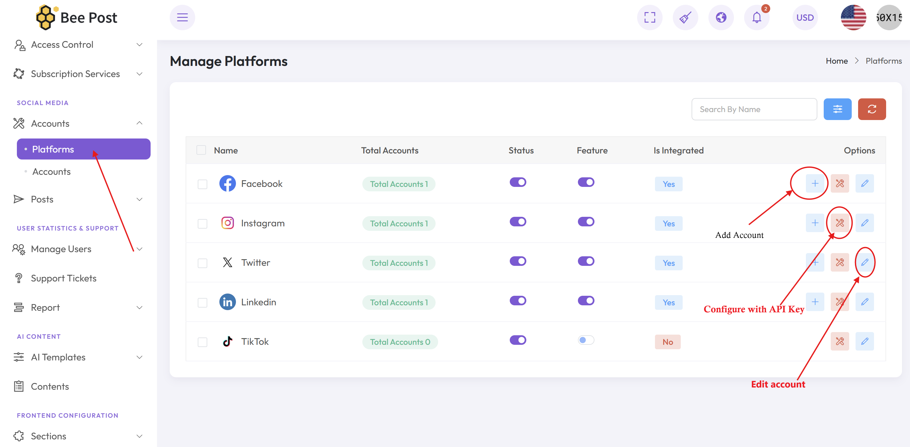
Connected Account You can see the connected account here
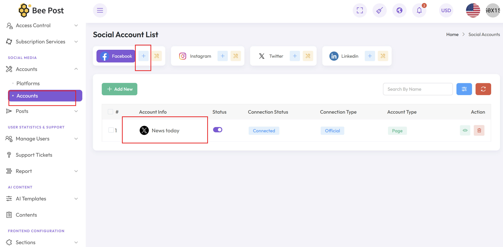
How to connect Account You can connect social media account by using API
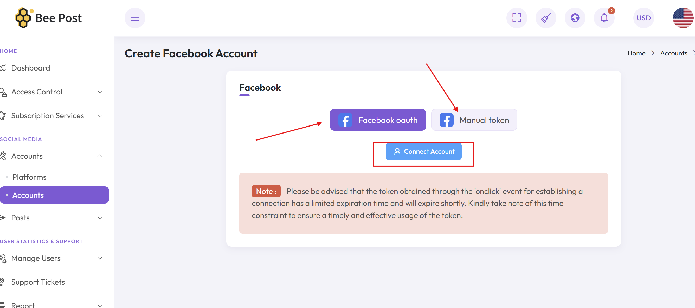
AI Template Management
AI Template Management
The AI Template Management section in the BeePost Admin Panel allows administrators to create and customize AI templates dynamically. This feature enables users to generate AI-powered content tailored to specific use cases with dynamic prompt variables. Follow these steps:
Creating an AI Template
Navigate to the Templates Section:
Go to AI Content in the sidebar menu.
Select Templates from the dropdown menu.
Fill in Basic Information:
Enter the Name of the template.
Provide a unique Slug for the template.
Select the appropriate Category and Subcategory.
Search for and assign an Icon to the template.
Add a Short Description to describe the template's purpose.
Add Prompt Information:
Click the + Add New Field button to add dynamic prompt fields.
Provide the Prompt Name and a Placeholder for the input field.
The system will automatically create a variable based on the prompt name for use in the template (e.g., {topic}).
Enter Prompt Text:
In the Prompt field, provide the instruction or request the AI should follow. For example:
Write the YouTube funny video title for {topic}, where {topic} is the subject provided by the user.
Save the Template:
Click Save to finalize and add the template to the system.
Understanding Dynamic Prompts
A Prompt in the AI Template is a structured instruction that guides the AI to generate the desired output. Dynamic prompts enhance flexibility by allowing the use of variables, which are placeholders for user-provided input. For instance:
Write a blog title about {topic}, targeting {audience}.
Here, {topic} and {audience} are variables dynamically replaced by user input when the template is used. This approach enables the creation of highly customizable and reusable templates.
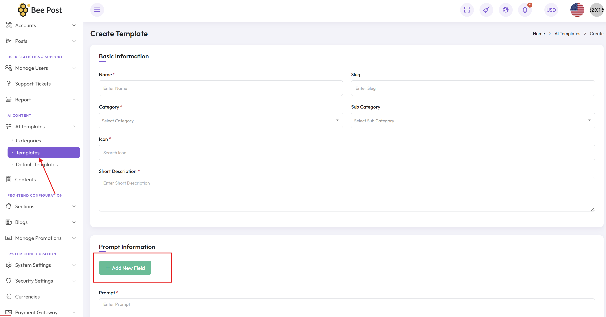
Subscription Plan Management
The Subscription Plan Management section in the BeePost Admin Panel allows administrators to create, customize, and manage subscription packages for users. Below are the steps and details for creating a plan, including descriptions of the highlighted fields:
Creating a New Subscription Plan
Navigate to Subscription Services:
Click on Subscription Services in the sidebar menu.
Select Packages and then click Add New to create a new plan.
Fill in Basic Information:
Title: Enter a name for the subscription package.
Icon: Search and select an icon to represent the plan visually.
Duration: Choose the plan duration (e.g., Monthly, Yearly, etc.) from the dropdown menu.
Price: Enter the cost of the plan.
Discount Price: Specify any discounted price for promotions.
Affiliate Commission: Input the percentage commission for affiliates promoting this plan.
Red-Marked Sections Explained
Template Access:
Select the templates that users subscribing to this plan will have access to.
Templates include AI-generated content categories like Latest Blog, Instagram Photo Captions, Ad Copy Creator, etc.
Platform Configuration:
Platform Access: Define which platforms (e.g., Facebook, Instagram, Twitter) users can manage through this plan.
Total Posts: Set the total number of posts users can create or schedule within the plan's duration.
Total Profiles: Specify the maximum number of social media profiles users can connect.
Webhook & Schedule: Enable options for Webhook Access and Schedule Posting as part of the plan.
AI Configuration:
Customize access to AI-powered features, such as specific templates, for this plan.
After filling out all necessary fields, click Save to create the subscription plan. This flexible structure allows administrators to tailor subscription options to suit different user needs and maximize revenue opportunities.
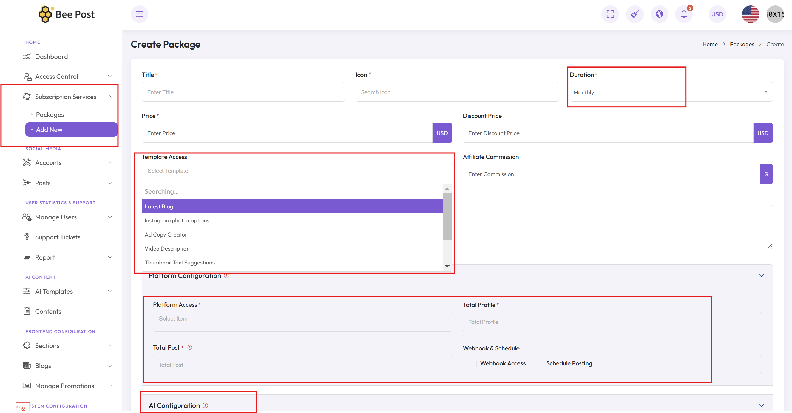
Social Media Account API Configuration in BeePost
Platform configuration in BeePost is designed to allow users to connect and manage their social media platforms seamlessly. This section is the gateway to integrate and oversee platforms like Facebook, Instagram, Twitter, LinkedIn, and more. Through this interface, users can view the status of their integrations, manage active features, and ensure smooth communication between BeePost and their social media accounts.
Features in the "Social Media" Section:
View Supported Platforms: See a list of available social media platforms, including Facebook, Instagram, Twitter, and LinkedIn.
Check Integration Status: Confirm if a platform is successfully integrated.
Enable or Disable Features: Toggle platform-specific features based on preferences.
Add or Edit Accounts: Link new accounts or modify existing ones to maintain accuracy.
This functionality streamlines the management of multiple platforms, ensuring users can schedule posts, analyze performance, and maintain a cohesive social media strategy all within BeePost.
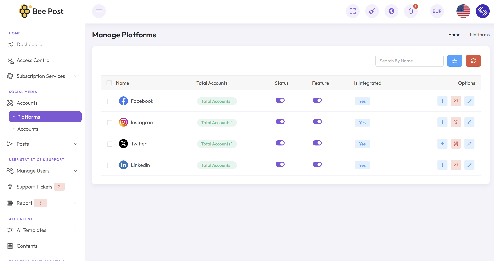
Facebook Platform Configuration
To configure the Facebook platform in BeePost, follow these steps to integrate your Facebook account seamlessly.
Steps to Configure:
Navigate to the Platforms section in the BeePost dashboard and locate the Facebook platform in the list.
Click on the Settings button (settings icon) under the "Options" column for the Facebook platform.
A modal titled Update Configuration will appear, displaying the following fields:
Client ID: Enter the Client ID from your Facebook developer account.
Client Secret: Enter the Client Secret from your Facebook developer account.
App Version: Specify the API version (e.g., v21.0).
Graph API URL: The default URL is https://graph.facebook.com.
Group URL: The default URL is https://www.facebook.com/groups.
Callback URL: Copy this URL using the copy button provided and paste it into your Facebook app's configuration in the Facebook Developer account.
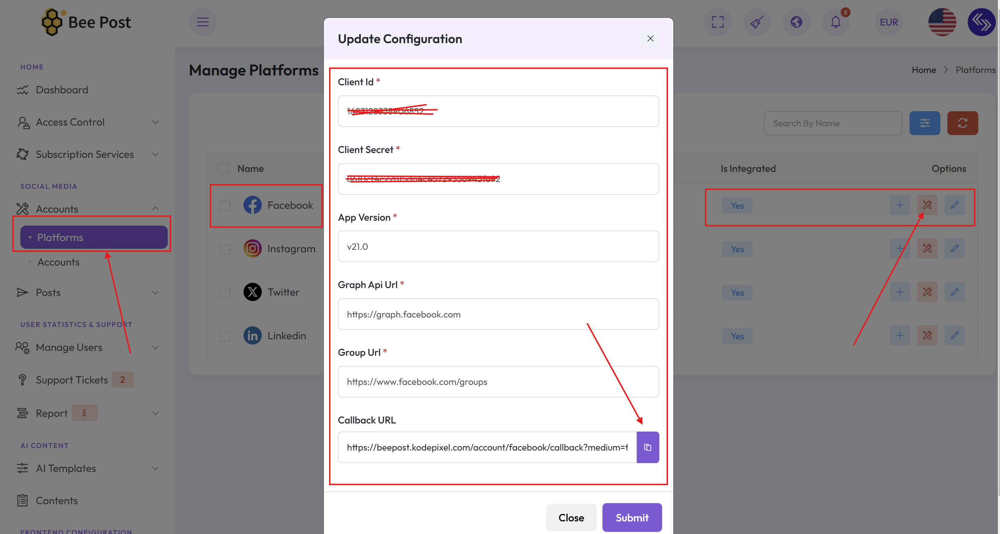
Next Step: Create a Facebook App
To find the required Client ID and Client Secret, you need to create a Facebook App. Follow these steps:
Now here you have to select your verified business if you have
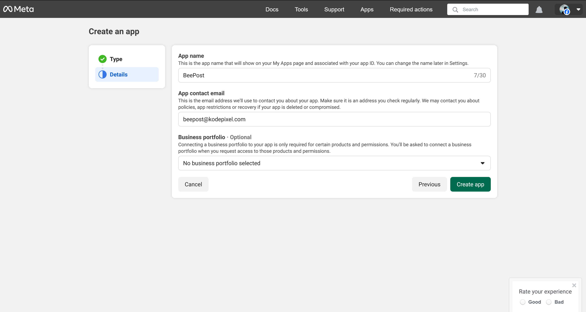
After complte app create now you can see the dashboard of fcebook developer and
Set up login for business
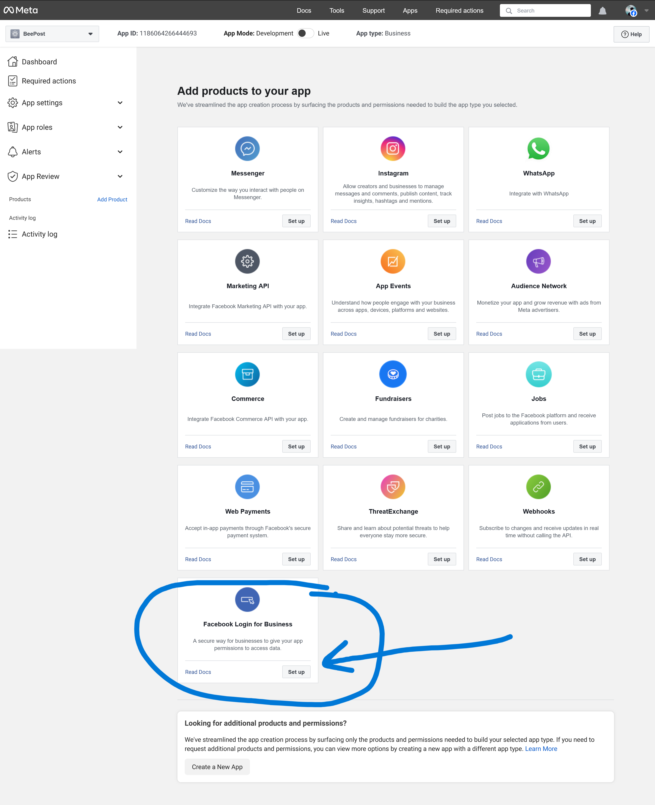
Set up a redirect URI back to the application, calback URI found in Accounts Config modal.
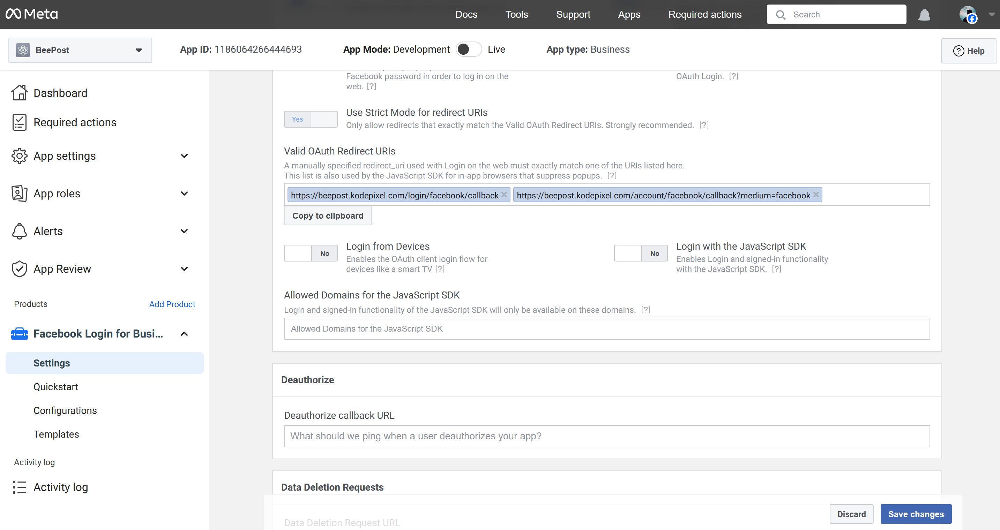
OAuth2 Redirect URI Configuration for BeePost
The OAuth2 Redirect URI is the location where the provider will redirect users after attempting to log in or authenticate their social accounts. You need to configure the following two callback URLs in your Facebook App's settings:
Required Callback URLs:
For Login: https://your-hosted-domain.com/login/facebook/callback
For Social Account Connectivity: https://your-hosted-domain.com/account/facebook/callback?medium=facebook
Examples Based on Environment:
If running on a production server:
Use the above URLs exactly as they are with https://your-hosted-domain.com.
If running locally:
Replace the base URL with http://localhost:4200. For example:
Social Account Connectivity Callback: http://localhost:4200/account/facebook/callback?medium=facebook
Request Advanced Permissions for Facebook Integration
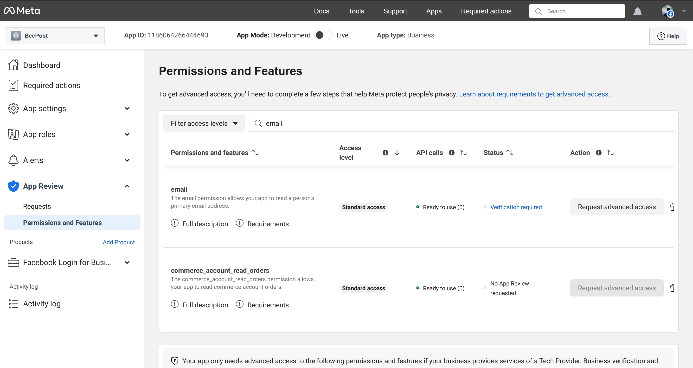
To enable advanced functionality for Facebook integration in BeePost, you need to request access to specific permissions from the Facebook Developer Console. These permissions will allow BeePost to manage pages, retrieve insights, and handle posts on your behalf.
Required Scopes:
Go to the Advanced Permission section in your Facebook App and request access for the following scopes:
Now, Goto the App Settings > Basic. Now you can found the App ID/Client ID & App Secret/Client Secret.
Note: Here App domain, privacy policy, terms and service url provide must for go live mode
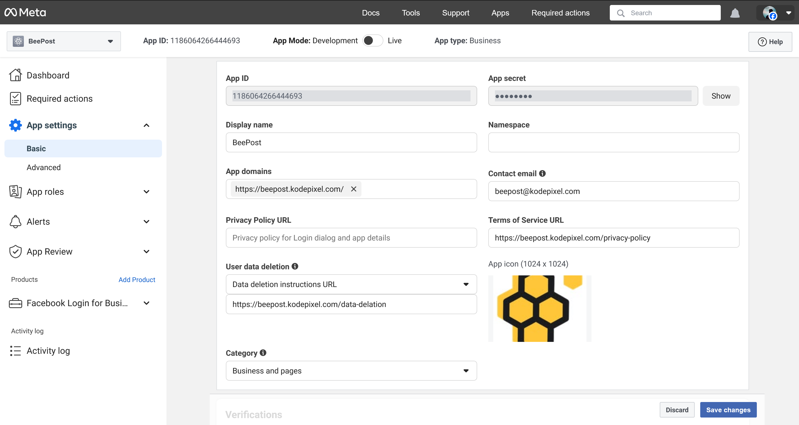
Now you copy and paste it to BeePost account config modal and save it.
Once your app is review from Meta and you provided the all information correctly then you just click to development to live
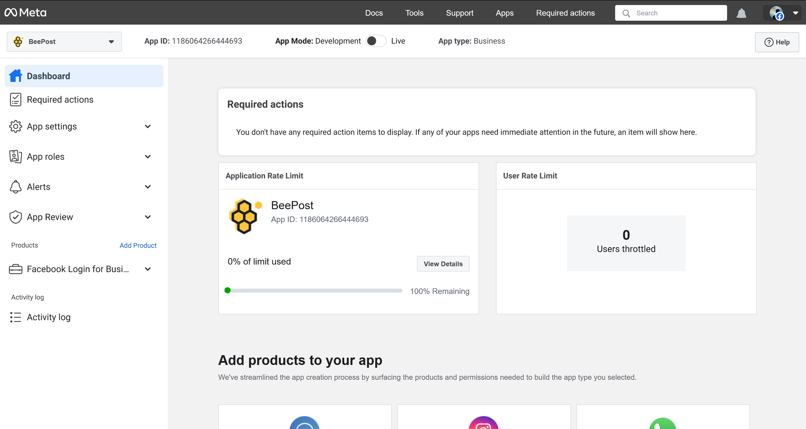
Instagram Platform Configuration
NOTE: Please be advised that Instagram and Facebook can use the same app (no need to create two separate apps).
Steps to Configure:
Navigate to the Platforms section in the BeePost dashboard and locate the Facebook platform in the list.
Click on the Settings button (settings icon) under the "Options" column for the Facebook platform.
A modal titled Update Configuration will appear, displaying the following fields:
Client ID: Enter the Client ID from your Facebook developer account.
Client Secret: Enter the Client Secret from your Facebook developer account.
App Version: Specify the API version (e.g., v21.0).
Graph API URL: The default URL is https://graph.facebook.com.
Group URL: The default URL is https://www.facebook.com/groups.
Callback URL: Copy this URL using the copy button provided and paste it into your Facebook app's configuration in the Facebook Developer account.
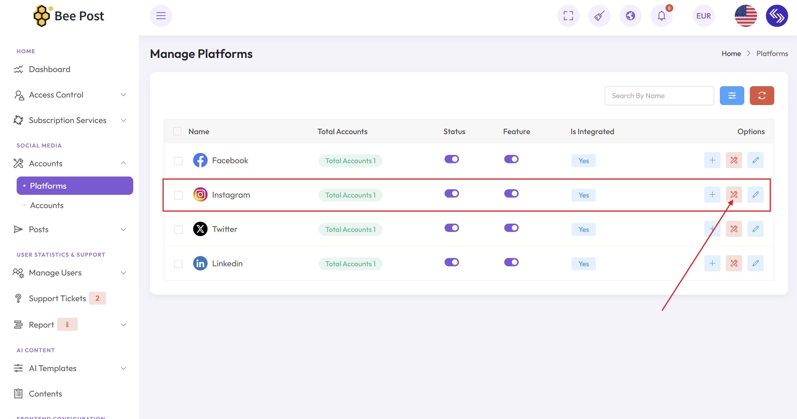
Once you have successfully created the app in your Meta Developer account, proceed to add a new product. To do this, navigate to the Menu options in the Meta Developer account. From there, select Instagram and click on the Set Up button, as shown in the screenshot. Follow the subsequent steps to complete the setup process.
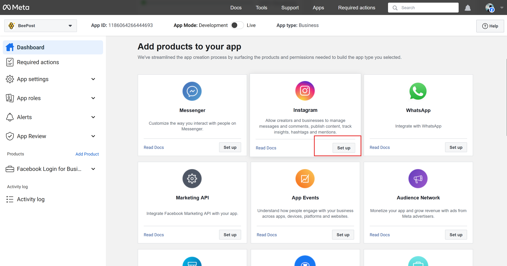
API Setup for Instagram Business Login
Follow these steps to set up the Instagram API for Business Login in your Meta Developer account. This process allows you to use the Instagram API to create, publish, and manage content, interact with users, and moderate comments.
Steps for API Setup:
Generate Access Tokens:
Add an Instagram account to generate access tokens and set up webhook subscriptions. Click on the Add Account button to link your Instagram account.
Configure Webhooks:
Set up a custom webhook URL or use services that help you create an endpoint. Ensure the app mode is set to Live to receive webhooks. Click the Configure button to set this up.
Set Up Instagram Business Login:
Provide a secure way for businesses to grant your app permissions to access data using Instagram Business Login. Click the Set Up button to configure this.
Complete App Review:
To access live data, your app must successfully complete the app review process. Go through the review to request advanced access to Instagram permissions. Submit your app for review when you are ready.
Navigate to the Platforms section in the BeePost dashboard and locate the X/Twitter platform in the list.
Click on the Settings button (settings icon) under the "Options" column for the Facebook platform.
A modal titled Update Configuration will appear, displaying the following fields:
API Key: Enter the API Key provided by your LinkedIn Developer account.
API Secret: Enter the API Secret associated with your LinkedIn Developer account.
Access Token: Provide the Access Token obtained from the LinkedIn Developer account.
Access Token Secret: Provide the Access Token Secret for your LinkedIn app.
Client ID: Enter the Client ID generated by your LinkedIn Developer account.
Client Secret: Enter the Client Secret provided for your LinkedIn app.
App Version: Specify the API version to be used (e.g., v2).
Setting Up X (Twitter) Integration for BeePost
Twitter uses an OAuth2 flow for most features with its v2 API. However, to upload pictures, the older Twitter v1 API must be used. BeePost leverages the normal OAuth1 flow to ensure compatibility with both APIs.
Follow these steps to set up the integration:
Step 1: Create a New App in Twitter Developer Portal
The OAuth2 Redirect URI is the location where Twitter will redirect after authentication. Use the URL specific to your setup:
For production: https://beepost.kodepixel.com/account/twitter/callback?medium=twitter
For localhost (development): Replace beepost.kodepixel.com with your local development URL (e.g., http://localhost:4200/account/twitter/callback?medium=twitter).
Step 4: Obtain Keys and Tokens
Go to the Keys and Tokens tab in your app settings.
Copy the following credentials for use in BeePost:
API Key
API Secret
Access Token
Access Token Secret
Step 5: Finalize and Save
Once you have completed the setup and entered the credentials in BeePost’s platform configuration, save the settings.
User Panel Overview
The User Panel in BeePost provides a streamlined and user-friendly dashboard designed to give users full control over their social media management and account activities. Below is an introduction to the key components and features of the User Panel:
Dashboard
The dashboard serves as the central hub, offering an overview of connected social accounts, post analytics, and recent activities:
Connected Social Accounts: Displays the status and activity of linked accounts such as Facebook, Instagram, Twitter, and LinkedIn. Users can add or manage accounts directly.
Post Performance: A graphical representation of post metrics, including total posts, pending posts, successful posts, and failed posts, categorized by platform and timeline.
Latest Post: Highlights the most recent post with details like the platform, caption, and time of posting.
Post Feed
View, create, and schedule posts across multiple social media platforms, ensuring timely content delivery and efficient campaign management.
Social Accounts
Manage linked social media profiles, add new accounts, or configure platform-specific settings to optimize performance.
AI Contents
Access AI-powered tools to create engaging content tailored to specific needs, such as captions, blog posts, and ad copies.
Plans
View subscription details, upgrade or downgrade plans, and explore available features for each plan.
Reports
Analyze detailed performance metrics and insights to refine social media strategies and track progress effectively.
Tickets
Submit and manage support tickets to resolve any issues or queries efficiently.
Profile and Settings
Update personal details, adjust settings, and manage account security for a seamless experience.
Quick Actions
Total Balance: Displays the user's current balance, enabling them to manage payments and services.
Logout: Securely sign out of the system.
The BeePost User Panel is designed to simplify social media management, empower users with insights, and ensure a smooth user experience across all features.
Sign-Up/Registration New Account
The Sign-Up/Registration New Account provides a user-friendly interface for new users to create an account on the BeePost platform. It allows users to register quickly while ensuring all necessary details are collected for a smooth onboarding experience. Below are the key components:
Registration Form
Enter Name: Input the full name of the user.
Enter Username: Choose a unique username for account identification.
Enter Email: Provide a valid email address for account verification and communication.
Enter Phone: Enter a phone number for additional verification or support.
Country: Select the user’s country from the dropdown menu (pre-filled with a default country if applicable).
Enter Password: Create a secure password for the account.
Confirm Password: Re-enter the password to confirm and avoid errors.
Terms and Conditions: Agree to the terms and conditions to proceed with the registration process.
Registration Button
Click on the Register button to complete the sign-up process.
Alternative Sign-Up Methods
Sign In With Google: Use your Google account for quick registration.
Sign In With Facebook: Register using your Facebook account.
Login Link
If the user already has an account, they can click on Login to navigate to the login page.
Connect Social Account
The BeePost platform allows users to seamlessly connect their social media accounts for efficient management and automation. Follow the steps below to connect your social accounts:
Step 1: Navigate to Social Accounts
From the left-hand sidebar, click on Social Accounts under the Main section.
Click on Account List to view and manage your connected accounts.
Step 2: Add a New Social Account
Click the + Add New button in the top-right corner of the Social Accounts page.
Select the social media platform you wish to connect (e.g., Facebook, Instagram, Twitter, or LinkedIn).
Step 3: Authenticate and Authorize
After selecting a platform, you will be redirected to the respective platform’s authentication page.
Log in with your social media credentials and authorize BeePost to access your account.
Step 4: Configure Account Details
Once connected, you can configure account-specific details such as:
Status: Toggle the account’s status to enable or disable its activity.
Connection Type: Ensure the connection is Official for full functionality.
Account Type: Specify if the account is a Page, Profile, or other type.
Step 5: Manage Connected Accounts
All connected accounts are displayed in the Social Accounts list with their respective details:
View: Click the Eye Icon to view account information.
Delete: Click the Trash Icon to remove the account if no longer needed.
By following these steps, you can easily connect and manage your social media accounts on the BeePost platform, ensuring seamless integration and improved workflow.
Subscribe to a New Plan
How to Subscribe to a New Plan or Upgrade an Existing Plan
The BeePost platform allows users to easily subscribe to a new plan or upgrade their existing plan to access enhanced features and capabilities. Follow the steps below:
Step 1: Navigate to the Plans Section
On the left-hand sidebar, click on Plans.
You will be presented with the available plans categorized by duration: Monthly, Yearly, and Unlimited.
Step 2: Review Plan Options
Each plan card includes key details such as:
Price and duration of the plan (e.g., $19/month for Basic Monthly).
Included features such as the number of social profiles, total posts, AI templates, and word tokens.
Compare the plans (Basic, Gold, Premium) and choose the one that best fits your requirements.
Step 3: Subscribe to a New Plan
If you are not subscribed to any plan, click the Subscribe button on the desired plan.
Follow the on-screen instructions to complete the payment process.
Once payment is confirmed, the plan will be activated, and its features will become available.
Step 4: Upgrade an Existing Plan
If you are already subscribed to a plan and want to upgrade, locate the plan you wish to switch to.
Click on the Subscribe or Upgrade button (e.g., if you’re on Basic Monthly and want to switch to Gold Monthly).
Follow the payment process. The system will automatically adjust the billing based on your current plan’s remaining duration and the upgrade.
Step 5: Running Plan
Your currently active plan will display a Running label for easy identification.
Step 6: Confirmation and Access
After subscribing or upgrading, you will receive a confirmation notification.
All features included in the new or upgraded plan will be immediately accessible.
With BeePost, subscribing or upgrading plans is simple, allowing you to unlock advanced tools and capabilities to streamline your social media management.
Post on BeePost
How to Create a Post on BeePost
The BeePost platform allows users to create, schedule, and post content seamlessly across multiple social media platforms. Follow the steps below to create a post:
Step 1: Navigate to the Create Post Section
Click on Post Feed from the left-hand sidebar menu.
Select Create Post to open the post creation interface.
Step 2: Select Where to Post
Choose the platforms where you want to publish your post (e.g., Facebook, Instagram, Twitter, LinkedIn).
Toggle between Feed and Reels depending on the type of content you want to create.
Step 3: Choose a Profile
Select the specific social media profile from the dropdown list for the chosen platform.
Step 4: Create Your Post
Write your post content in the Create Your Post text box.
Use the AI Assistant to generate or enhance content ideas for your post.
Attach images or videos by clicking the Photo/Video button.
Use Predefined Content for pre-saved templates or predefined text options.
Schedule your post by clicking the clock icon to set a specific date and time for posting.
Step 5: Add Links
Include any relevant URLs in the Links section to direct your audience to external content.
Step 6: Preview and Post
View a preview of your post in the Network Preview section on the right-hand side.
Once satisfied, click the Post button to publish immediately or schedule it for later.
With BeePost, creating and managing social media content is simple and efficient, enabling users to maximize their reach and engagement effortlessly.
Support
You can have a customer support services from us 24/7. For any kind of queries, please feel free to contact us for customization, support and suggestion. Your satisfaction is our utmost priority! We are absolutely committed to our valued customers to provide the best services.
We do appreciate your valuable feedback and your feedback helps us to improve our business and services.
{kind=link}
{kind=link}
{kind=link}
{kind=link}
{kind=link}
{kind=link}
{kind=link}
{kind=link}
{kind=link}
{kind=link}
{kind=link}
{kind=link}
{kind=link}
{kind=link}
{kind=link}
Social Account/Platform Management
The Platform Management section in the BeePost Admin Panel allows administrators to integrate and manage social media platforms. Follow these steps to set up and manage platforms effectively:
Adding Accounts to a Platform
Configuring a Platform with API Keys
Editing an Account
This section enables seamless integration and management of social media platforms to ensure efficient posting and account control for all supported platforms.

Connected Account You can see the connected account here

How to connect Account You can connect social media account by using API
